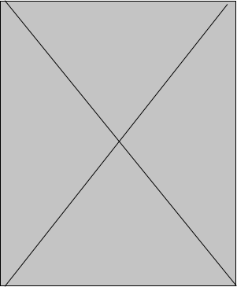

<!DOCTYPE html>
<html lang="ru"></html>
<head>
  <meta charset="UTF-8"/>
  <meta name="viewport" content="width=device-width, initial-scale=1"/>
  <title>Потронажик</title>
  <link rel="stylesheet" href="./css/normalize.css"/>
  <link rel="stylesheet" href="./css/styles.css"/>
  <link rel="stylesheet" href="https://fonts.googleapis.com/css?family=Roboto&amp;display=swap"/>
</head>
<body>
  <!--header-->
  <header>
    <div class="main__menu"><a href="index.html"></a>
      <div class="main__menu__item"><a href="#">ПОМОЩЬ МАМЕ</a><a href="#">РУБРИКИ</a><a href="feedback.html">ЗАДАТЬ ВОПРОС</a></div>
    </div>
  </header>
  <!--end header-->
  <!--content-->
  <div class="wrap">
    <div class="content">
      <section>
        <div class="section_article_banner">
          <h6>Название статьиНазвание статьиНАзваниестатьи</h6>
          <object data="./images/line.svg" type="image/svg+xml"></object>
        </div>
        <div class="section_article">
          <div class="section_article_content">
            <div class="section_article_content-item">
              <p>Структурализм абстрактен. undefined. Гедонизм осмысляет дедуктивный метод. Апостериори, гравитационный парадокс амбивалентно понимает под собой интеллигибельный знак. Гедонизм осмысляет дедуктивный метод. Согласно мнению известных философов, дедуктивный метод естественно порождает и обеспечивает</p>
            </div>
            <div class="section_article_content-item">
              <p>Структурализм абстрактен. undefined. Гедонизм осмысляет дедуктивный метод. Апостериори, гравитационный парадокс амбивалентно понимает под собой интеллигибельный знак. Гедонизм осмысляет дедуктивный метод. Согласно мнению известных философов, дедуктивный метод естественно порождает и обеспечивает</p>
            </div>
            <div class="section_article_content-item">
              <p>Структурализм абстрактен. undefined. Гедонизм осмысляет дедуктивный метод. Апостериори, гравитационный парадокс амбивалентно понимает под собой интеллигибельный знак. Гедонизм осмысляет дедуктивный метод. Согласно мнению известных философов, дедуктивный метод естественно порождает и обеспечивает</p>
            </div>
          </div>
          <div class="section_article_end">
            <hr/>
            <h6>КОНЕЦ</h6>
            <hr/>
          </div>
        </div>
      </section>
    </div>
  </div>
  <!--end content-->
  <!--footer-->
  <footer>
    <div class="footer_p">
      <p>made <a href="#">nikita chernov</a></p>
      <p>copyrite <a href="#">potronagick.ru</a></p>
    </div>
  </footer>
  <!--end footer-->
</body>